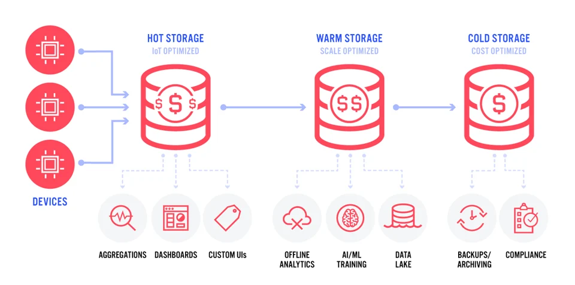
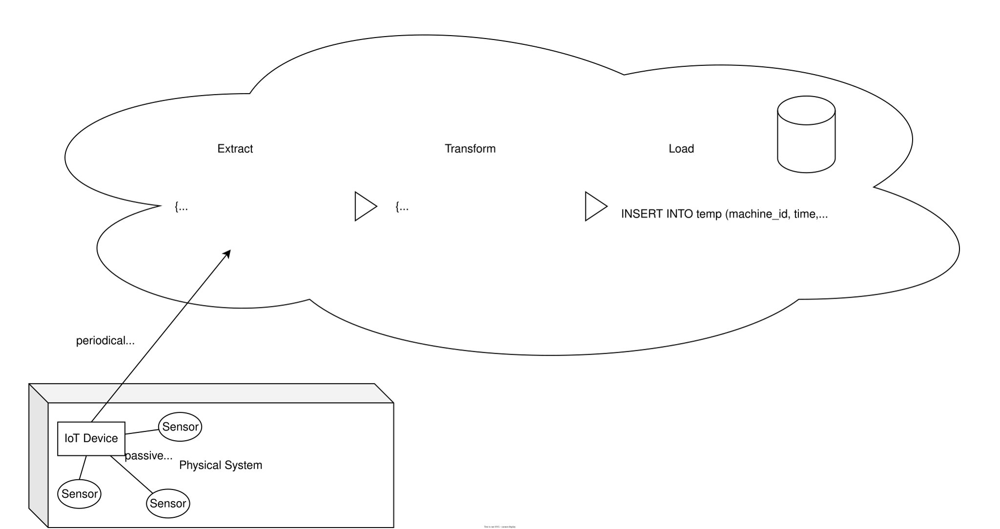
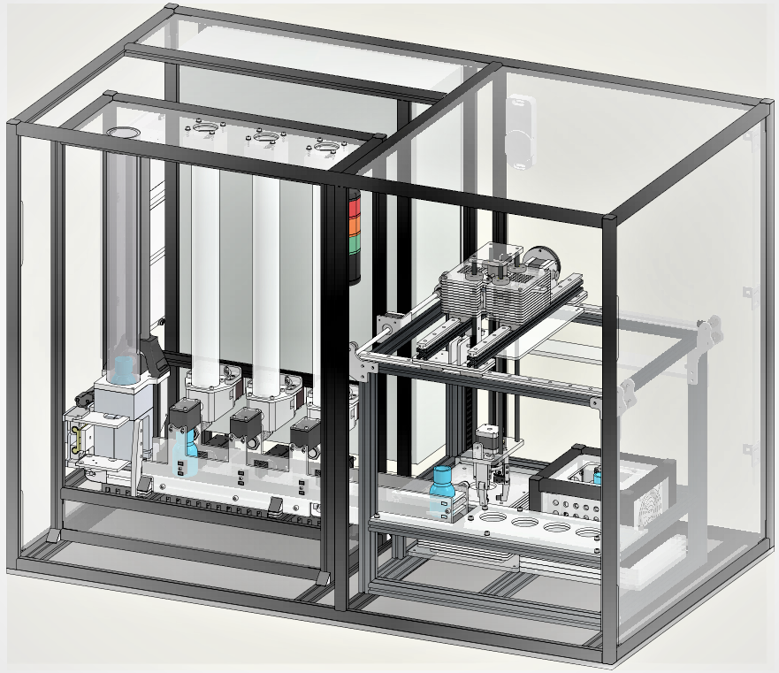
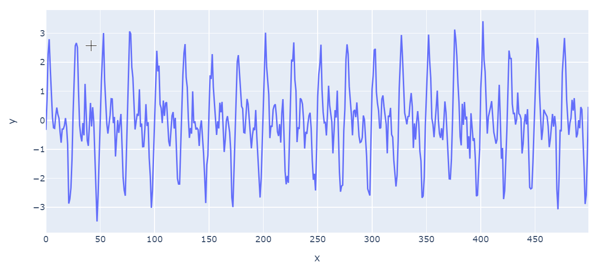

Datenspeicherung
Serafin Kollegger & Julian Huber

Persistierung und Visualisierung von Daten

Dieses System holt die Daten der SPS vom MQTT-Broker ab und speichert diese in einer Datenbank. Zudem werden die Daten in einem Dashboard visualisiert.
- MQTT-Client: Dieser Teil des Systems ist für das Abholen der Daten von der SPS und das Senden an den MQTT-Broker zuständig.
- Datenbank: Dieser Teil des Systems ist für das Speichern der Daten in einer Datenbank zuständig.
- Visualisierung: Dieser Teil des Systems ist für die Visualisierung der Daten zuständig.
Lebenszyklus von Daten

| Storage Type | Typische Software Tools | Anwendungsfälle |
|---|---|---|
| Hot Storage | Arbeitsspeicher (BeckhoffH MI, node-red) | Dashboards, Echtzeitverarbeitung (z.B. Mittelwertbildung) |
| Warm Storage | Dokumentenbasierte Datenbaken (z.B. MongoDB, tinyDB), Zeitreihen-Datenbanken (z.B. InfluxDB) | Persistierung von Daten, die für Dashboards und Analysen benötigt werden |
| Cold Storage | Relationale Datenbanken (z.B. SQLite, PostgreSQL), Data Warehouses | Langfristige Speicherung von Daten, die für Analysen und Berichte benötigt werden |
Extract, Transform, Load (ETL)

-
Pipeline von Datenquellen zum Speicher
-
Extraktion
- periodisch: z.B. Temperatursensor über REST
- ereignisgesteuert: z.B. Bewegungsmelder über MQTT
- anfragegesteuert: z.B. Kamera über REST
- Transformation
- Syntaktische Transformationen (Form): z.B. Format der Zeitstempel
- Semantische Transformationen (Inhalt): z.B. Durchschnitt
- Laden
- Einbringen in die zentrale Datenstruktur (z.B. Data Warehouse oder Datenbank) z.B. tinyDB oder CSV-Datei
Speichern
- Datenbank:
- Softwaresystem zur Aufbewahrung von Daten
- Data Warehouse:
- Sammlung aufbereiteter Daten in fester Struktur
- Data Lake:
- Unstrukturierte Sammlung von Daten
🏆 Aufgabe 12.1.2 (40 %)
- Abgabeformalien: Dokumentieren Sie ihr Vorgehen sehr kurz als gerne als Markdown-Datei
- In dieser Aufgabe soll ein System zur Datenspeicherung (Warm oder Cold Storage) und Visualisierung implementiert werden
- Wir werden die Daten zu einen späteren Zeitpunkt für die Fehleranalyse verwenden
-
In diesem Fall speichern wir die Daten einer anderen Simulation unter dem Topic
aut/SoSe26/<Gruppe>/# -
Umfang fürs bestehen der Aufgabe:
- [ ] Einfache Lösung mit CSV-Datei als Datenbank
- [ ] Daten aller relevanten (siehe unten) Topics werden vollständig und korrekt gespeichert
- [ ] Python-Programm, welches eine beliebige Zeitreihe aus der Datenbank visualisiert
- [ ] Der Report im Markdown enthält einen Plot einer Ausgewählten Zeitreihe für die Sie die Daten gespeichert haben
- [ ] Mindestens 15 Minuten Daten sind gespeichert
- durch folgende Aufgaben kann die Punktzahl erhöht werden
- [ ] Datenbank wird durch tinyDB, SQLite oder InfluxDB ersetzt
- [ ] Plots werden durch Dashboard mit z.B. mit Grafana oder Plotly ersetzt
- [ ] System ist durch config-Datei konfigurierbar (z.B. MQTT-Server)
- [ ] Sinnvolle Fehlerbehandlung z.B. bei Verbindungsabbruch zum MQTT-Server
- [ ] Daten oder Informationen über die Daten können einfach aus anderen Systemen abgerufen werden (auch während das System läuft), z.B. durch eine REST-API oder SQL-Abfragen
Komponenten
1. MQTT-Client (Extract)
- Der MQTT-Client ist ein Python-Programm, welches die Daten von der SPS abholt und an den MQTT-Broker sendet.
- Hierzu wird z.B. die Bibliothek
paho-mqttverwendet. - Der Client abonniert das Topic
aut/SoSe26/<Gruppe>/#und sendet die Daten an die Datenbank. - Hinweise:
- Nutzen Sie das Skript aus den Beispielen und versuchen Sie zunächst ein Topic zu abonnieren und die Daten in der Konsole auszugeben.
- Überlegen Sie sich dann Funktionen, um die Daten in eine Struktur zu bringen, und diese in dann zu speichern.
- Passen sie dieses Vorgehen dann auch für die anderen Topics an.
2. Datenbank (Transform & Load)
- Hier müssen Sie eine Entscheidung treffen, wie die Daten gespeichert werden sollen.
- Für das Dashboard sollten die Daten so gespeichert werden, dass sie einfach visualisiert werden können.
- Für die späteten Analysen sollten die Daten so gespeichert werden, dass sie möglichst vollständig sind und sinnvoll miteinader verknüpft werden können.
- Sehen Sie sich dazu die Datenstruktur (unten) für die Aufgaben Lineare Regression und Classification an.
- Treffen Sie bewusste Entscheidungen, wie die Daten gespeichert werden und ob sie den Aufwand der Umwandlungen beim Speichern oder beim Laden aufbringen wollen.

Datenbedarf für die Aufgabe Lineare Regression
Idee: Können wir die Waage am Ende des Prozesses einsparen?
| bottle | vibration-index_red | time_red | fill_level_grams_red | recipe | temperature_C_red | final_weight_grams |
|---|---|---|---|---|---|---|
| 20939 | 102.823497 | 1716554173 | 638.667673 | 21 | 23.045409 | 45.01 |
| 20940 | 105.050436 | 1716554177 | 628.085354 | 21 | 24.043060 | 44.01 |
| 20941 | 100.824738 | 1716554181 | 618.295130 | 21 | 23.664343 | 45.31 |
| 20942 | 107.097053 | 1716554185 | 607.837681 | 21 | 23.052217 | 45.41 |
- der
vibration-indexist eine Metrik, die Vibrationswerte jedem Dispenser beim Abfüllen jeder Flasche zuordnet - Ebenso müssen die Werte für die anderen beiden Dispenser (rot und blau) gespeichert werden. Für die folgenden Aufgaben muss alles in einer Tabelle gespeichert werden.
Datenbedarf für die Aufgabe Classification
Idee: Können wir gesprunge Flaschen anhand der Schwingungen beim Aufprall aus der Verzeinzelung identifizieren`?
- Für jede Falsche wird gespeichert:
- ID der Flasche
bottle - Ist diese Flasche gesprungen
is_cracked - Eine Liste mit 500 Vibrationswerten
vibration_values, die als Zeitreihe einer Schwindung betrachtet werden (diesevibration_valueshaben nicht mit demvibration-indexzu tun, sondern werden an der Verzeinzelung gemessen)
- ID der Flasche

Lösungvorschlag für Projektstruktur
code/1_persitierung/
├── visualisierung
│ ├── visualisierung.py
│ └── __init__.py
├── database
│ ├── database.py
│ ├── transform.py
| ├── data.csv
│ └── __init__.py
├── mqtt_client
│ ├── mqtt_client.py
│ └── __init__.py
│── README.md
└── requirements.txt